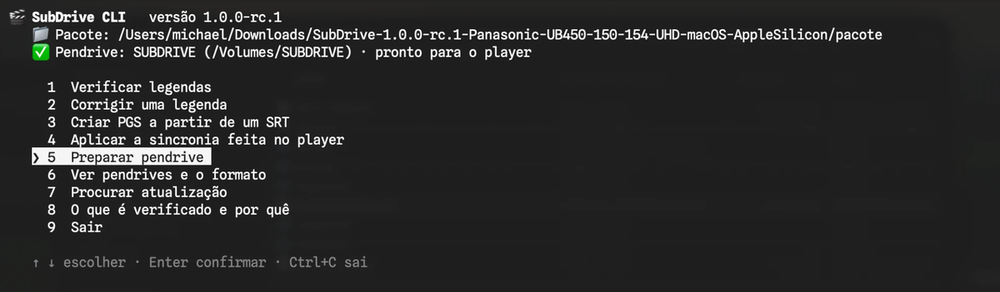

Como usar
Do ZIP ao filme com legenda, em cinco passos.
1Baixe o ZIP certo
Na página de downloads há um ZIP para cada tipo de disco e cada computador. O nome diz qual é qual:
| Seu computador | Para Blu-ray | Para 4K UHD |
|---|---|---|
| Windows 10 ou 11 | …-BD-Windows.zip | …-UHD-Windows.zip |
| Mac com chip Apple (M1 em diante) | …-BD-macOS-AppleSilicon.zip | …-UHD-macOS-AppleSilicon.zip |
| Mac com processador Intel | …-BD-macOS-Intel.zip | …-UHD-macOS-Intel.zip |
| Linux | …-BD-Linux.zip | …-UHD-Linux.zip |
Assiste os dois tipos de disco? Baixe os dois e use um pendrive para cada.
2Veja o que vem dentro
SubDrive-CLI(no Windows,SubDrive-CLI.exe)- O programa que prepara o pendrive e cuida das legendas.
pacote- O pacote SubDrive, que o SubDrive CLI grava no pendrive. Não precisa mexer nele.
LEIA-ME.txt- Estes mesmos passos, resumidos.
Não precisa instalar nada: nem Java, nem outro programa. Extraia o ZIP e deixe os três juntos na mesma pasta.
3Prepare o pendrive
- Conecte um pendrive formatado em FAT32. Se ele estiver em outro formato, o SubDrive CLI avisa e explica como formatar.
- Abra o SubDrive CLI com dois cliques. Ele abre um menu; use as setas e o Enter.
- Escolha "Preparar pendrive". Na primeira vez, ele pede para baixar o firmware oficial da Panasonic (91 MB) e monta o programa do player. Depois mostra o que vai gravar e pede confirmação.
No fim, o pendrive fica assim:
legendas/ onde você coloca as legendas
sincronia/ os ajustes de sincronia que você fizer no player
relatorios/ relatórios do que aconteceu, se algo der errado
fontes/ as letras já desenhadas
BDJ.jar e outros arquivos do SubDriveSe você preparar o mesmo pendrive de novo, por exemplo depois de uma atualização, suas legendas, ajustes e preferências ficam onde estão.
Se algo impedir de abrir
O Windows diz "O Windows protegeu o computador"
Aparece com programas novos que não pagam por um certificado digital. Clique em "Mais informações" e depois em "Executar assim mesmo". Só na primeira vez.
O Mac diz que não pode abrir o SubDrive CLI
Abra Ajustes do Sistema, vá em Privacidade e Segurança, desça até a mensagem sobre o SubDrive CLI e clique em "Abrir Mesmo Assim". Depois disso ele abre com dois cliques, numa janela do Terminal.
O Chrome bloqueia o download
Abra a lista de downloads (Ctrl+J no Windows, ⌘+Shift+J no Mac), encontre o arquivo e escolha "Manter". Ou baixe por outro navegador.
No Linux, como abro?
Num terminal, dentro da pasta extraída, rode ./SubDrive-CLI.
4Coloque as legendas
Copie os arquivos .srt ou .sup para a pasta legendas do pendrive. Antes, passe cada um pelo "Verificar legendas" do menu: o player é exigente, e o SubDrive CLI diz se a legenda vai funcionar. Se não for, "Corrigir uma legenda" cria uma cópia consertada.
O SubDrive CLI também cria um PGS a partir de um SRT e transforma a sincronia feita no player numa legenda nova. Veja tudo o que ele faz.

5Assista
Na primeira vez:
- Ejete o pendrive do computador.
- Ligue o player sem disco e espere a tela inicial carregar por completo.
- Coloque o pendrive. O player abre uma janela perguntando o que fazer com ele: feche essa janela sem escolher nada.
- Espere de 10 a 15 segundos.
- Coloque o disco e comece o filme.
- Aperte a tecla VERMELHA. No painel, em "Arquivo", escolha a legenda. As setas para cima e para baixo trocam de linha; para os lados, mudam o valor.
Nas próximas vezes, pode deixar o pendrive no aparelho. Só espere alguns segundos na tela inicial antes de começar o filme.
Se o seu player começa o disco sozinho assim que você o coloca, recomendo desligar essa opção nas configurações do aparelho. O SubDrive pode funcionar mesmo assim, mas às vezes o filme começa antes de o pendrive estar pronto.
Se o disco tiver legenda própria ligada, desligue-a para não aparecerem duas.